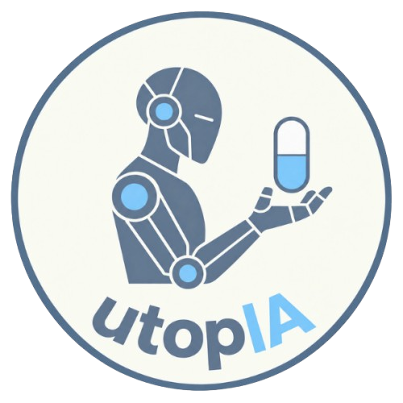

Ética & Salud
Retos éticos de los algoritmos de diagnóstico médico
Análisis sobre la privacidad de datos de pacientes y la responsabilidad legal de las decisiones automatizadas en medicina.
Leer artículo
La IA, del laboratorio al paciente
¿Puede la IA ayudar a descubrir nuevos fármacos?
Un recorrido detallado sobre quiénes somos, nuestros objetivos y cómo vamos a cumplirlos.
Leer artículo